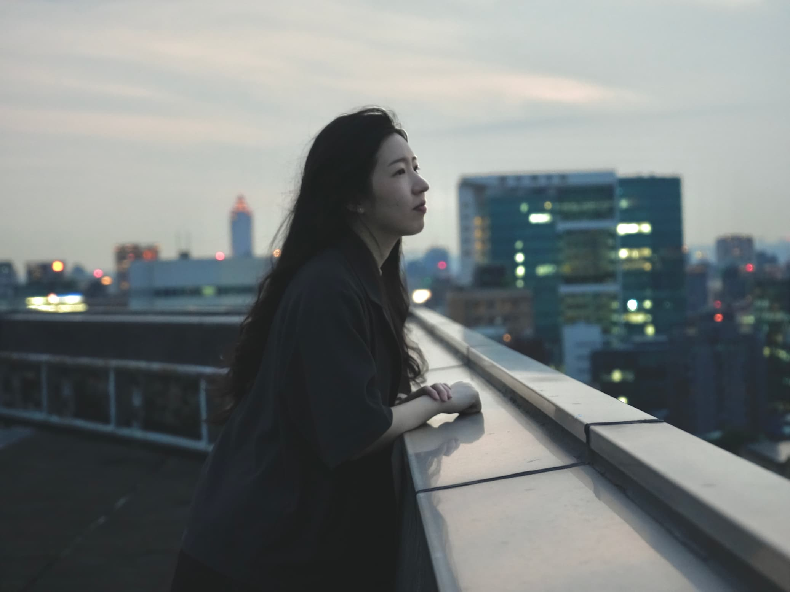
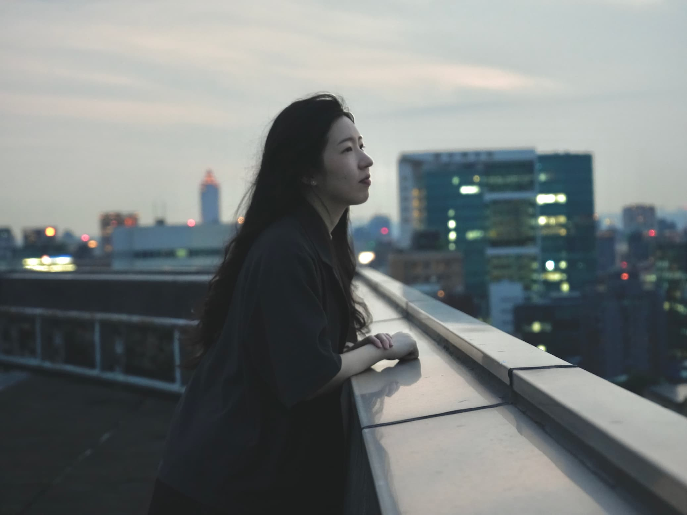

webs_te graph_c v_deo ph_to webs_te graph_c v_deo ph_to webs_te graph_c v_deo ph_to webs_te graph_c v_deo ph_to webs_te graph_c v_deo ph_to webs_te graph_c v_deo ph_to webs_te graph_c v_deo ph_to webs_te graph_c v_deo ph_to webs_te graph_c v_deo ph_to webs_te graph_c v_deo ph_to webs_te graph_c v_deo ph_to webs_te graph_c v_deo ph_to webs_te graph_c v_deo ph_to webs_te graph_c v_deo ph_to webs_te graph_c v_deo ph_to webs_te graph_c v_deo ph_to webs_te graph_c v_deo ph_to
 
